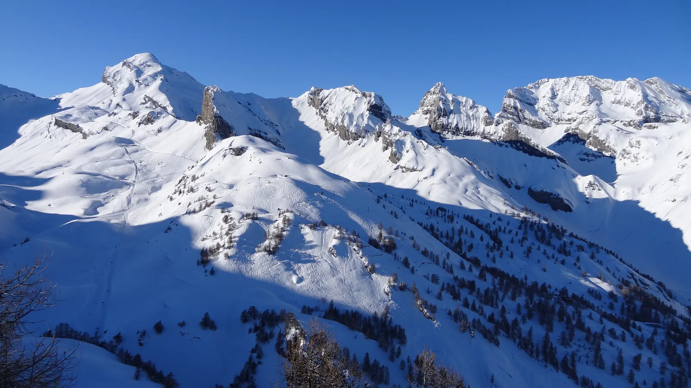
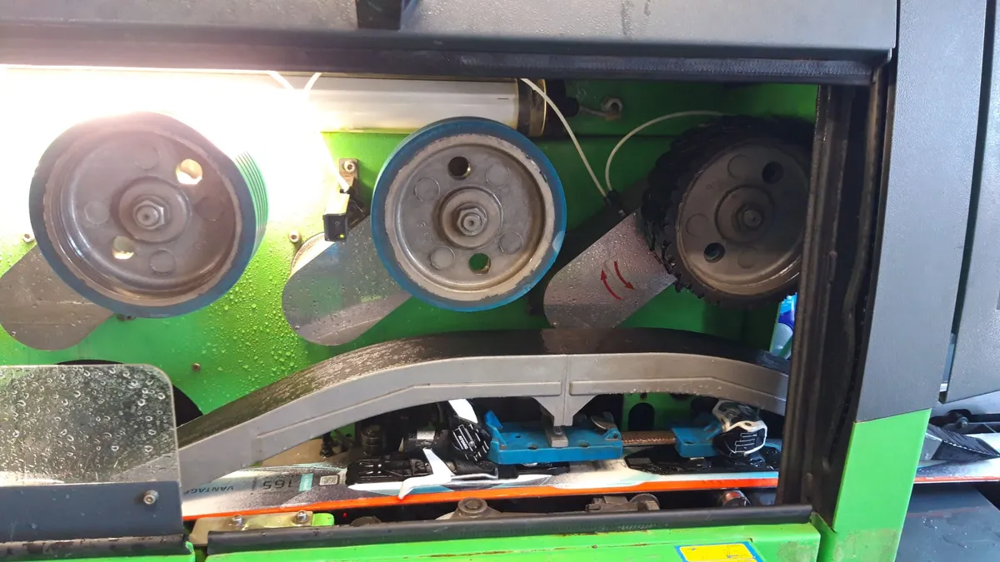
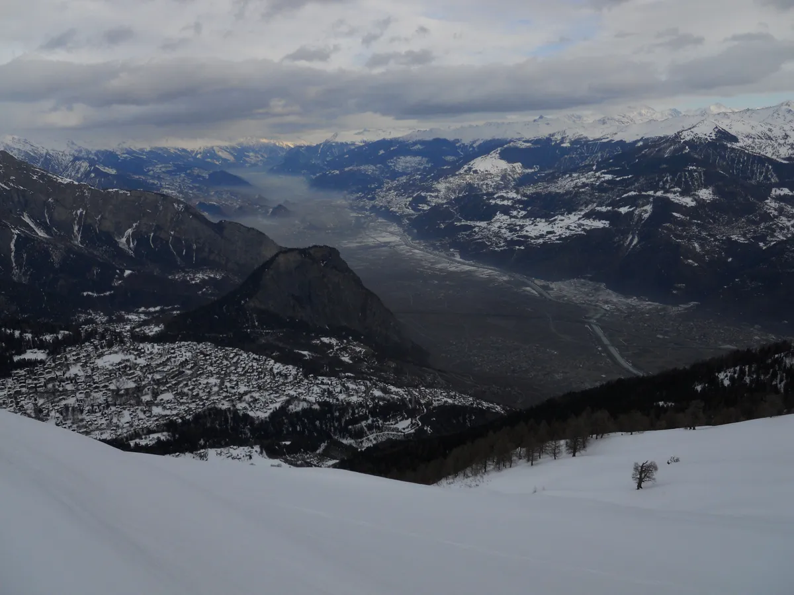
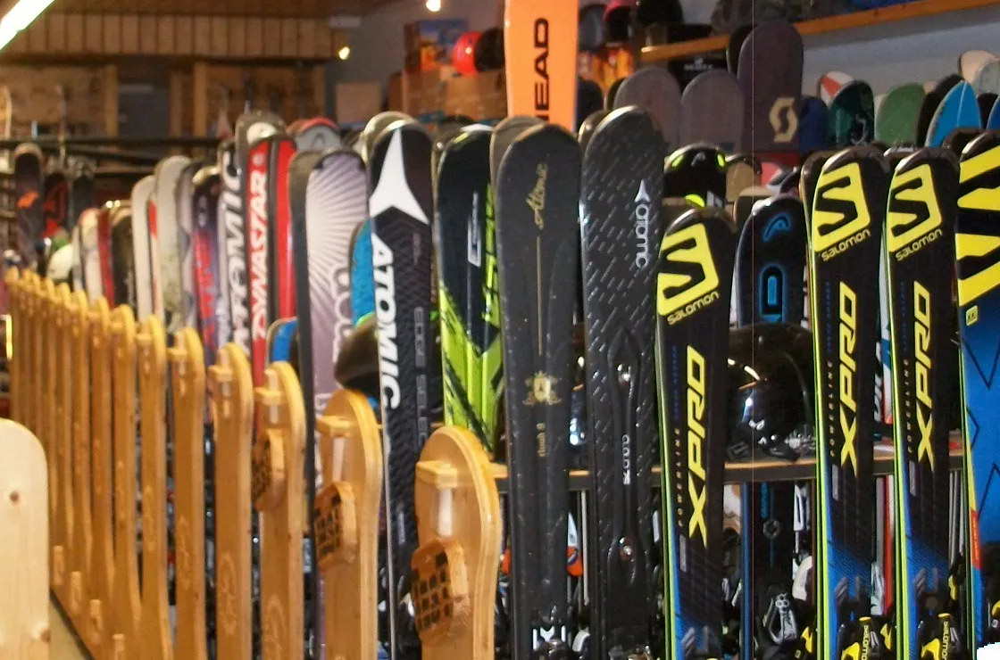
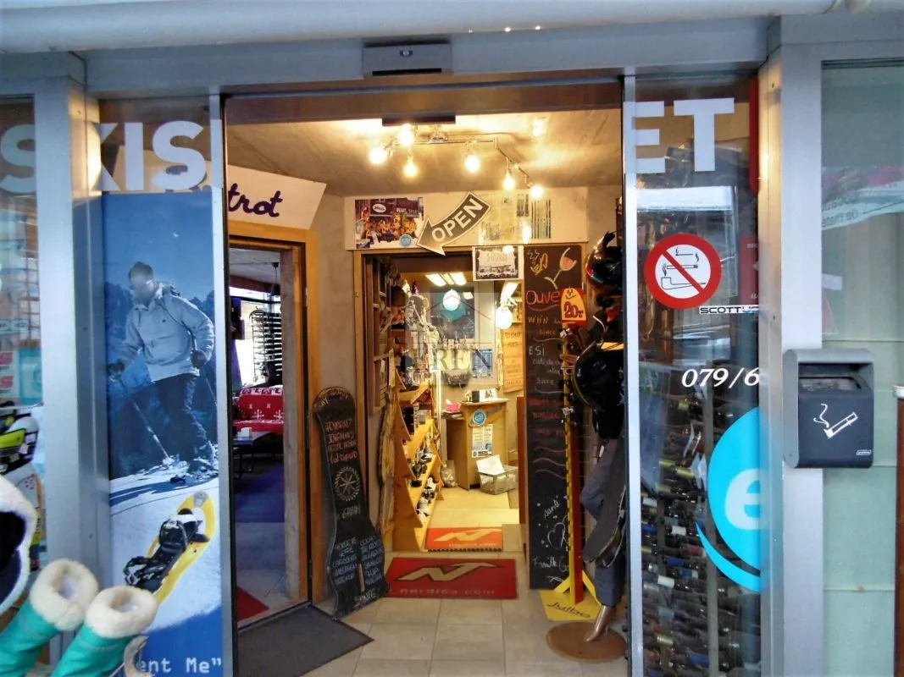
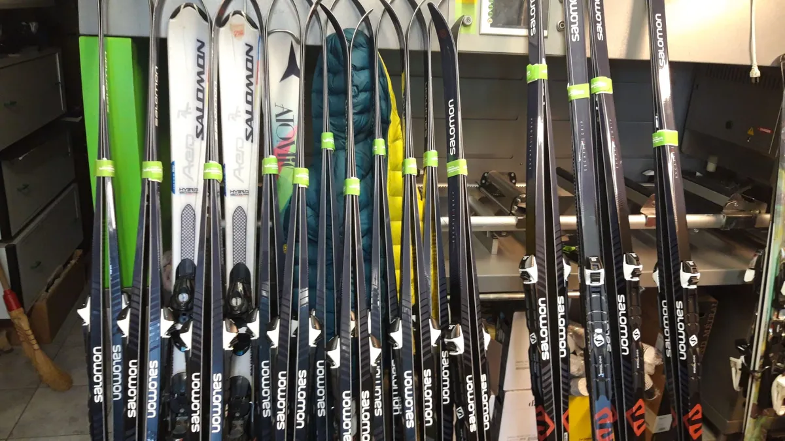
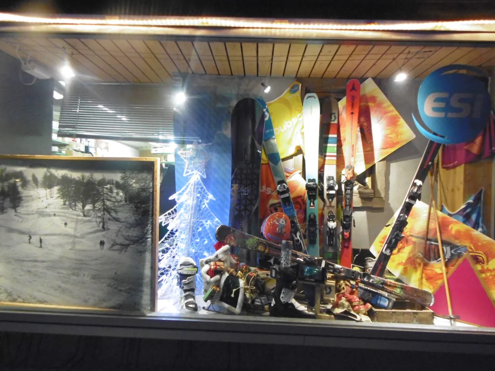
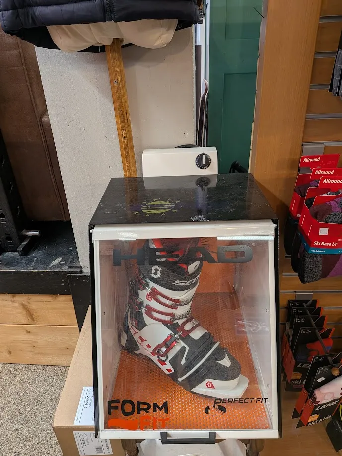

Un atelier robotisé
Entretien de vos skis et snowboards à l'atelier. Pour vos services de ski, déposez votre matériel la veille avant 15 h pour le lendemain.

Ovronnaz · Valais
Gollut Sports vous accueille à Ovronnaz depuis 1989 : location et vente de skis, snowboards, télémarks, skis de fond et raquettes, avec un atelier robotisé pour l'entretien de votre matériel.
Bienvenue
Gollut Sports est le plus ancien magasin de la station, à environ 1 km des pistes. L'équipe, formée de professeurs de ski, vous conseille en français, en allemand et en anglais.
Entretien de vos skis et snowboards à l'atelier. Pour vos services de ski, déposez votre matériel la veille avant 15 h pour le lendemain.
Séchoirs à chaussures et désinfection. Bootfitting et machine pour les semelles orthopédiques, pour des chaussures à votre pied.
À l'intérieur du magasin, un bar œnothèque vous accueille pour boire un verre après une journée sur les pistes.
Location
Skis, snowboards, télémarks, skis de fond, raquettes à neige, bâtons et casques, pour enfants et adultes. Prix pour un jour et pour six jours. Les chaussures se louent séparément (voir la grille complète).

Atelier robotisé, bootfitting, empiècements de semelles et machine pour les semelles orthopédiques. Pour vos services de ski : la veille avant 15 h pour le lendemain.
Réservation
Les locations en ligne de Gollut Sports se font avec Skiset, notre partenaire depuis 25 ans.
Sur la page Gollut Sport de Skiset, choisissez vos dates de location, puis votre matériel. Vous préférez parler à quelqu'un ? Appelez le magasin.
Grille complète
Tarifs de location publiés sur gollut.ch (saison [À CONFIRMER]) et tarifs de l'atelier pour la saison 2025-2026. Prix en francs suisses (CHF), par personne.
Sur votre location avec les cours de ski de l'école.
Liquidation des skis et souliers de randonnée, et des souliers de télémark.
École de ski
Gollut Sports est tenu par des professeurs de ski Swiss Snowsports. Suzy, directrice de l'école de ski, est votre contact au magasin.

Prenez vos cours avec l'école de ski et profitez de 10 % de rabais sur votre location chez Gollut Sports. Inscriptions et informations au magasin [À CONFIRMER].





Le magasin
Gollut Sports vous accueille au centre de la station, à environ 1 km des pistes, pour la location, la vente et l'entretien de votre matériel. Plus qu'un magasin, c'est aussi un lieu de rencontre, avec son bar œnothèque.
Accès